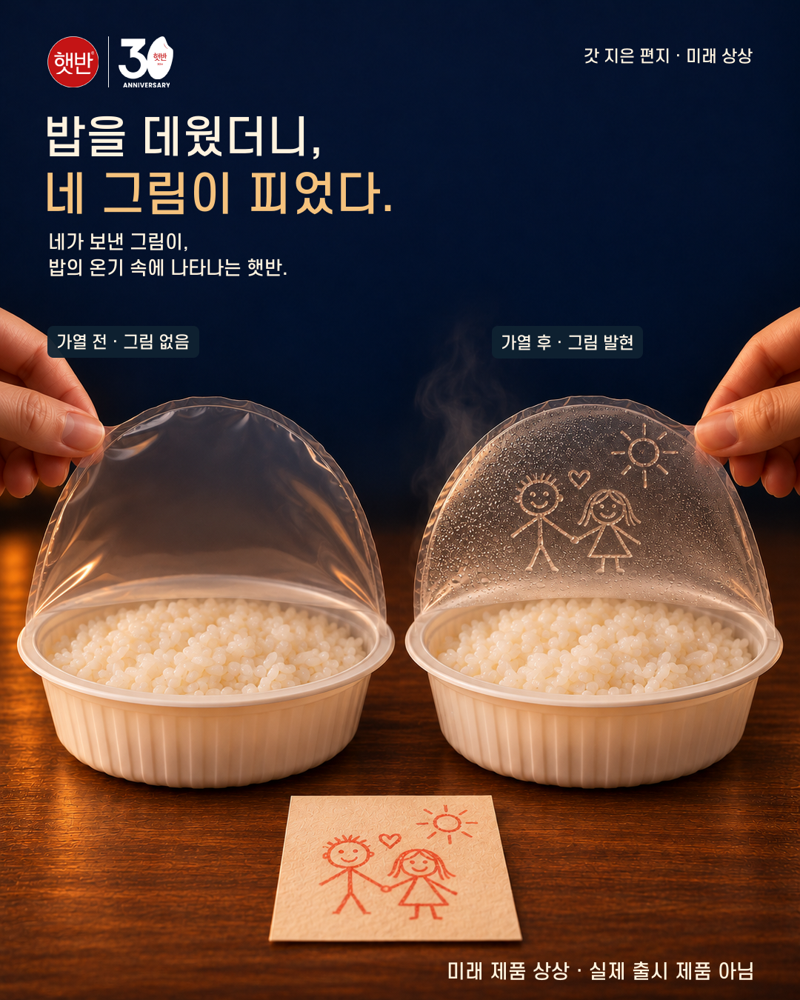
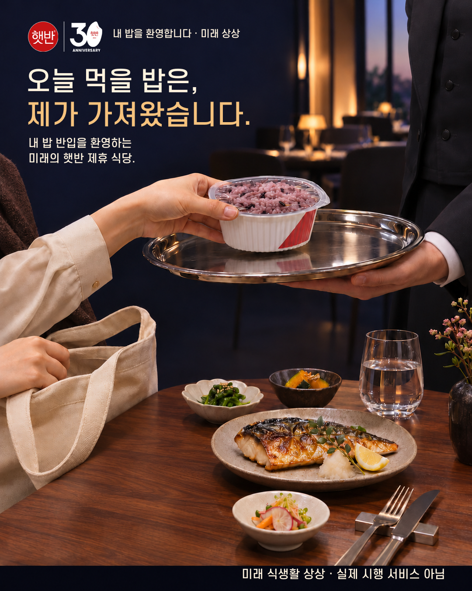
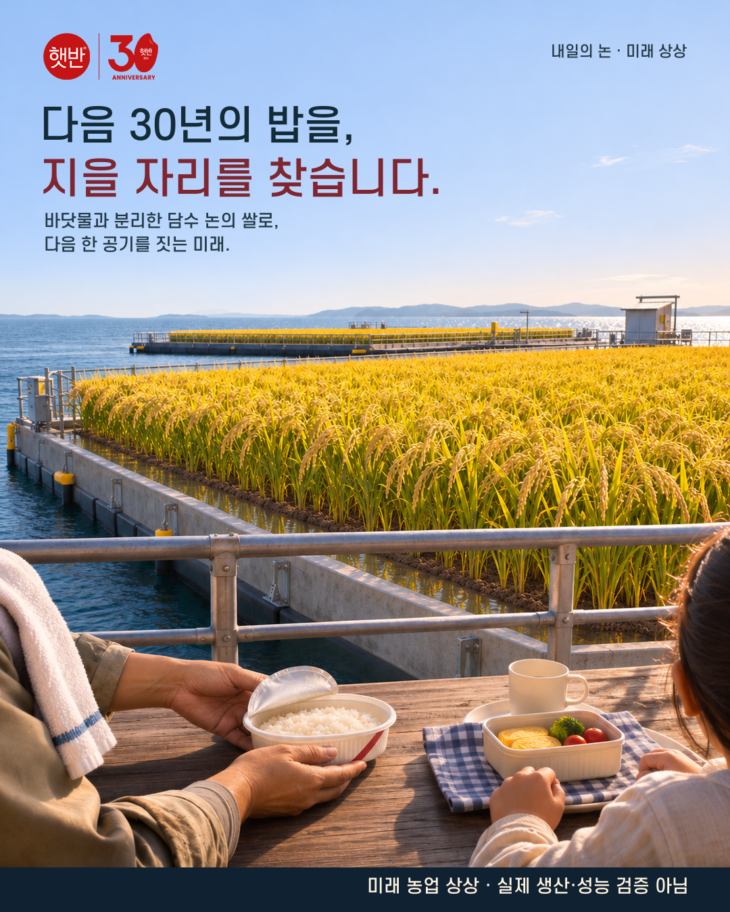

기존 편지안의 이해를 보강하고, 식당 문화와 쌀 공급의 미래를 추가했습니다. 편지는 두 장의 한 작품, 나머지는 각각 별도 작품으로 준비했습니다.
01 · 주력

밥을 데웠더니, 네 그림이 피었다.
PNG 원본 · JPG · 제출 문구
둘째 장: 보존한 A6의 감정 장면 보기
02 · 추가 출품

오늘 먹을 밥은, 제가 가져왔습니다.
03 · 비전형 추가안

다음 30년의 밥을, 지을 자리를 찾습니다.